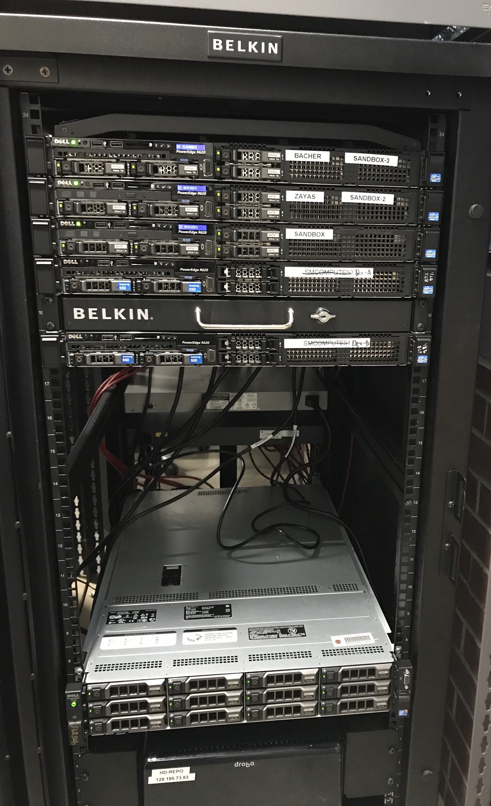
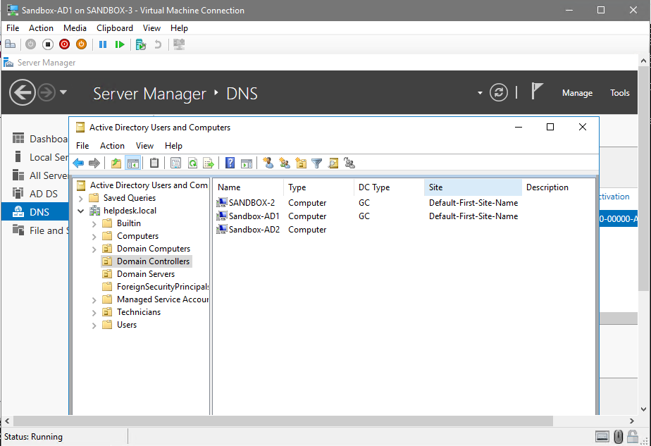
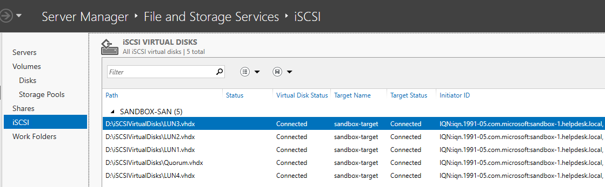
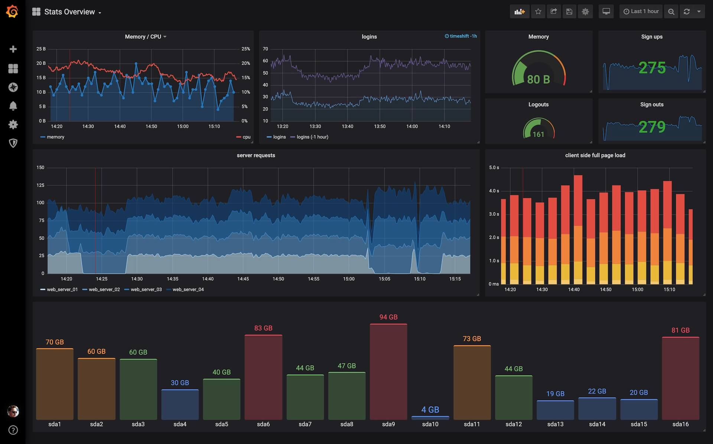

First, a quiz. Is the following code valid in PHP5 or PHP7?
$pageErrors[$field] = $err->toStr();
Correct! PHP5 didn't require typecasting, so functions like toStr() were common.
However, the correct PHP7 code is:
$pageErrors[$field] = (string) $err;
Incorrect! PHP5 didn't require typecasting. The correct PHP7 code would be:
$pageErrors[$field] = (string) $err;
This tool was fantastic. Without it, I'd have to debug via the web browser, waiting for HTTP 500 errors and debugging from Apache logs.
Thus, I painstakingly went function by function and changed them to PHP7 equivalents.
Results
Finally, I was able to view my webpage and work on testing.
Here's a photo of the interface:
I worked with the Librarian and assistants to debug every feature. For example, the system would "crash" when entering an invalid barcode.
My fix was primitive, but I didn't want to modify too much of the original code:
As you can see, this isn't an elegant solution, but it's better than a blank page.
Anyways, OpenBiblio is still a work in progress. As I find bugs, I push fixes to the Github page.
CCI HelpDesk Development Server
Another one of my projects is setting up an entire development environment for FSU's College of Communication and Information.
I started from racking servers and swapping RAM, to live-migrating Active Directory.

Our server rack is mainly composed of used Dell R620s. We also have a SAN with 10TB in RAID 5.
My contribution to this project was setting everything up for my supervisors and colleagues to use. I acted as the sole system administrator in this Windows Server 2016 environment.

Challenges
The largest challenge I faced was setting up a Failover Cluster, or allowing Virtual Machines (Hyper-V) to be Highly Available.
I spent months of the issue, and no matter what I did, the cluster would have weird issues, such as nodes failing, and the cluster storage was completely unreachable.

What I did to debug:
Completely wiped and re-imaged one server that was always having problems
Re-made the cluster 10+ times
Wiped and re-made all LUNs
Re-configured ISCSI initiators and targets multiple times
Setup a VLAN just for iSCSI traffic
Went past page two of Google Search Results (it's a scary place)
This was completed while I handled my HelpDesk technician responsibilities. After two months, I found the solution hidden in a 2015 post on Microsoft's forums.
Can you guess? Click below to reveal the answer.
It was Active Directory. Two of the hosts in the cluster were Domain Controllers, and as soon as I demoted them, everything worked flawlessly. This is when I did an Active Directory migration from physical to virtual servers.
As of this writing, I'm still doing work on our server rack. My next goal is to setup Grafana and Prometheus for server monitoring.

Interactive Resume
To continue my career portfolio journey, please click the button below to see my interactive resume!